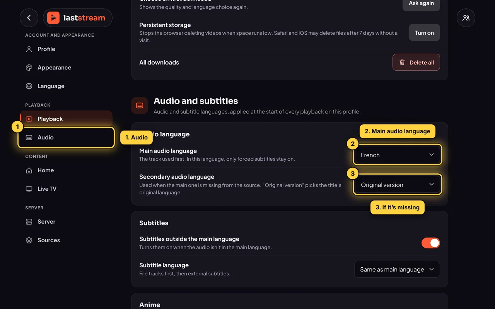
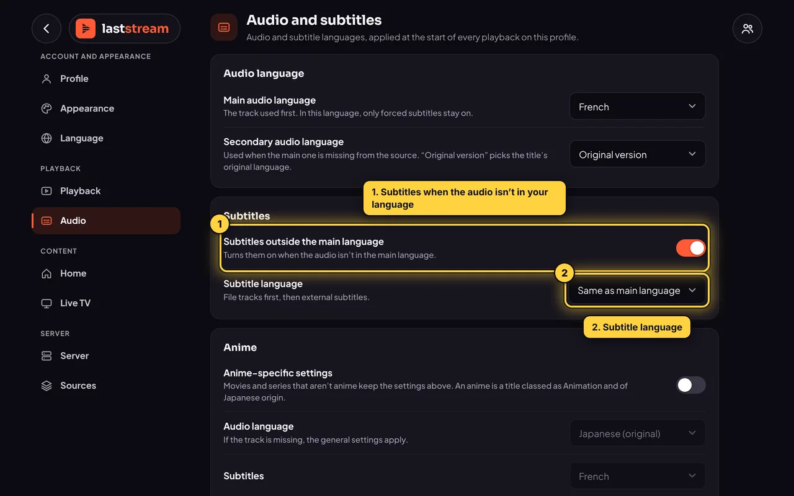
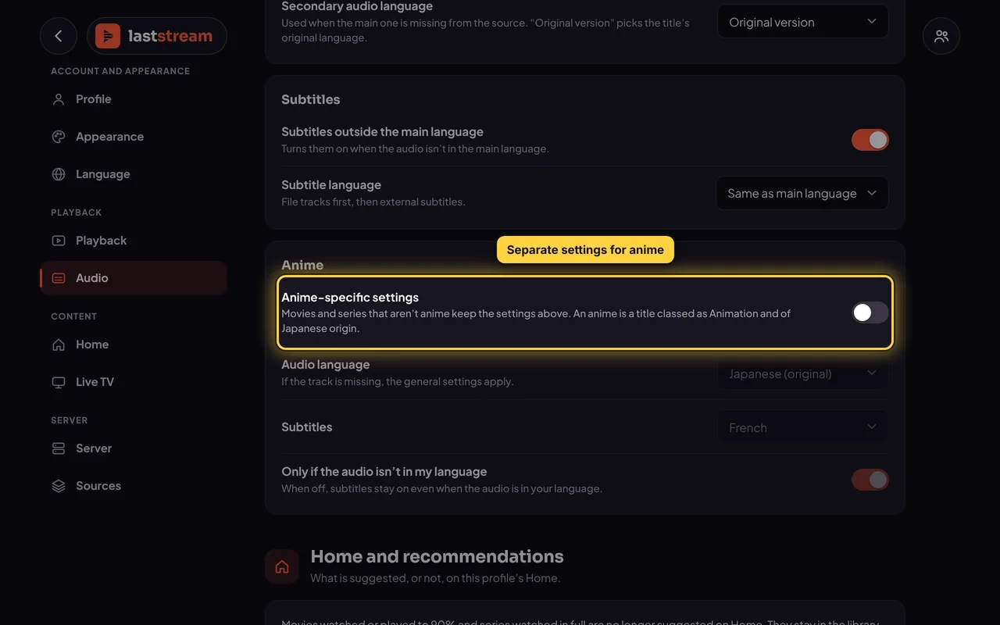

Steps
On each screenshot, the yellow frame shows where to tap or click; the numbers give the order. The app is in French: the screenshots show its English translation.
-
Open “Settings” (your avatar at the top right), “Audio” category (1). Pick your “Main audio language” (2), then the “Secondary audio language” (3), used when the main one is missing from the source.

-
Turn on “Subtitles outside the main language” (1) to get subtitles when the audio isn’t in your language, and pick their language (2).

-
For anime, turn on “Anime-specific settings”: for example Japanese audio with subtitles in your language, without changing other titles.
